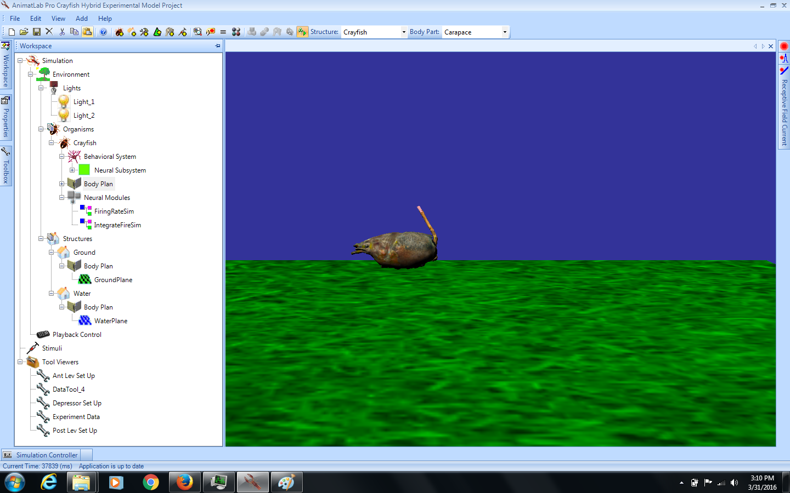

This is the readme for the animatlab model associated with the paper: Chung B, Bacque-Cazenave J, Cofer DW, Cattaert D, Edwards DH (2015) The effect of sensory feedback on crayfish posture and locomotion: I. Experimental analysis of closing the loop. J Neurophysiol 113(6):1763-71 This software requires the animatlab package which is available for free download here: http://animatlab.com/Download The windows version has been verified to run by the modeldb administrator (20160331). There are tutorials available to learn how to use AnimatLab in general: http://animatlab.com/Getting-Started Demo: 1) Once you have downloaded and extracted this archive start animatlab and click file-> Open and browse to open the Crayfish Hybrid Experimental Model file (an AnimateLab project file). 2) Click on the Workspace tab in the upper right and then click on the minus signs to contract the trees associated with "Behavioral System" and "Body Plan" 3) Double click on the text of "Body Plan" to see the virtual environment in the right panel. 4) From the top menu select View - Run Simulation. You should see a depiction of the crayfish with a leg up and oscillations:  It is possible to rotate in 3D by dragging the mouse on the image during the AnimatLab simulation.